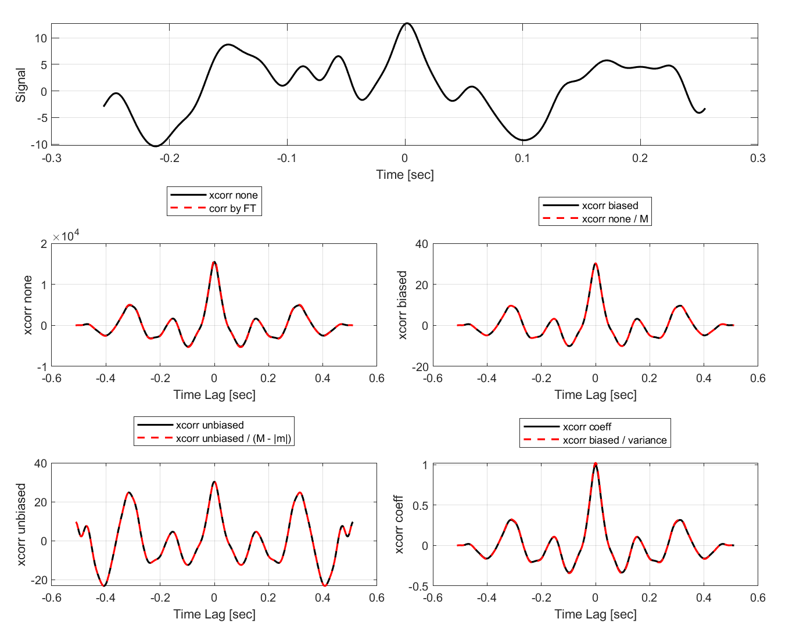
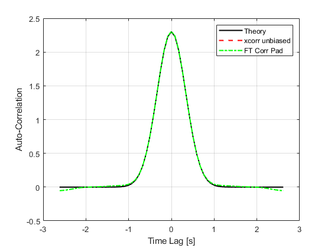
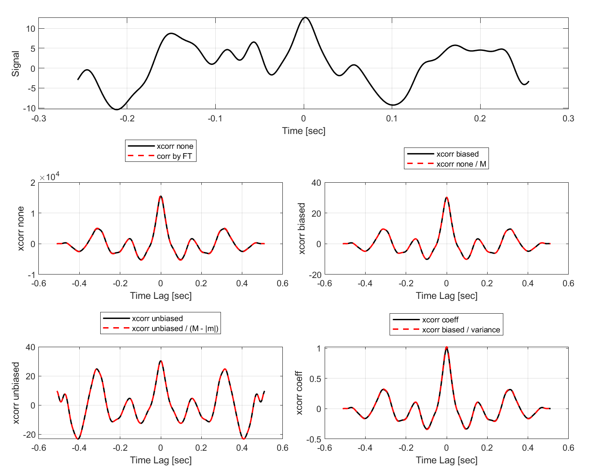
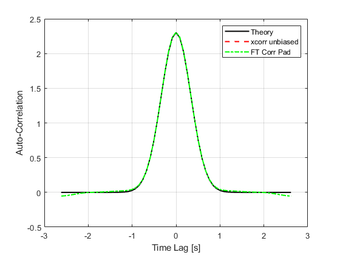

Unbiased Correlation of 1-D Random Processes
In the years since I wrote the book, I have had many occasions to use the function corr2_ft. Here, I provide more detail about computing the correlation of samples from a 1-D random process. This provides background for the 2-D calculation. At the end, this is illustrated with a code example.
Correlation is a widely used analysis tool. Mostly, I use it for analyzing random signals that occur in optical systems that collect data through atmospheric turbulence. For example, Section 9.5.5 in the book uses the ensemble average auto-correlation of the propagated field to verify that the turbulent wave-optics simulation exhibits the expected second-order field statistics. Other random signals like wavefront gradients, Zernike mode coefficients, and irradiance fluctuations can be analyzed with correlation. These can be 2-D spatial signals or 1-D temporal signals, depending on how they are measured. As I mention in Correlation Integral with Window Functions, Matlab provides the function xcorr to compute cross-correlations of 1-D functions. I encourage everyone to read to the xcorr documentation. It is informative, particularly regarding the various normalization options. The 'unbiased' option is particularly relevant here, and the function corr2_ft in Section 3.2 of the book provides an analogous calculation for removing the bias of a 2-D spatial mask that occurs often in optics.
In this article, I first describe the calculation of unbiased correlation in 1-D. Then, I illustrate with an example that compares the output of the xcorr function to a correlation computed manually with FTs.
Unbiased Correlation in 1-D
In Some Statistical Definitions, I write the correlation of an ergodic random process \(u\left(t\right)\) as $$ \begin{equation} \Gamma_u\left(\tau\right) = \lim\limits_{T\to\infty} \frac{1}{T} \int\limits_{-T/2}^{T/2} u\left(t\right) u\left(t-\tau\right) \, \textrm{d}t. \end{equation} $$ In reality, we always observe the process \(u\left(t\right)\) over a finite period of time, described by a window function \(W\left(t\right)\). Accordingly, we can define a time-windowed function realization of the random process as \(u^{\prime}\left(t\right) = u\left(t\right) w\left(t\right)\). Thus, we always have the integral of the time-windowed realization $$ \begin{equation} I^{\prime}\left(\tau\right) = \int\limits_{-T/2}^{T/2} u^{\prime}\left(t\right) u^{\prime}\left(t-\tau\right) \, \textrm{d}t. \end{equation} $$ Assuming that \(T\) is longer than the window overlap, the integral can be written as $$ \begin{equation} I^{\prime}\left(\tau\right) = \int\limits_{W\left(t\right) W\left(t-\tau\right)} u\left(t\right) u\left(t-\tau\right) \, \textrm{d}t, \end{equation} $$ where the limits of integration are set by the nonzero duration of \(W\left(t\right) W\left(t-\tau\right)\). This has units of the random process squared \(\times\) time (seconds). To compute the average over the time window, we need to divide by the duration of the integration limits, which is \(\mathcal{A}\left(\tau\right)\) from Eq. (2) in Correlation Integral with Window Functions. Then the best approximation to the statistical correlation that we can make from time-windowed samples is $$ \begin{equation} \Gamma_u\left(\tau\right) \simeq \left\langle \frac{I^{\prime}\left(\tau\right)} {\mathcal{A}\left(\tau\right)} \right\rangle. \end{equation} $$ In this equation, \(\left\langle \ldots \right\rangle\) still indicates an ensemble average, but not by integrating over the PDF. In this case, we have a finite collection of realizations of \(u\left(t\right)\), so we perform the integral \(I^{\prime}\left(\tau\right)\) for each realization, divide by \(\mathcal{A}\left(\tau\right)\), and average the results.
The following code example generates random draws of time-correlated process and then computes the biased and unbiased auto-correlation of each realization and then computes the average auto-correlation. The random process is generated using the function ftShGaussianProc1 that I wrote (will post it with an explanation in the future). It uses a 1-D version of the phase-screen generation technique from my book. However in this case, it accepts a handle to a PSD function.
It first uses Matlab's xcorr function with its various options. Then, it makes explicit use of the auto-correlation theorem with the ft and ift functions from my book. The plots demonstrate use of different normalizations with and without bias. Using the 'unbiased' option causes xcorr to normalize by the number of samples for each lag. In the code, this is given by M-abs(mLags). In plot (b) of the first figure, xcorr with the 'none' option divided by M and xcorr with the 'biased' option match each other, but they do not match the theoretical auto-correlation. That discrepancy is the statistical bias. The mismatch is rectified in plot (c) with the 'unbiased' option, and equivalently, xcorr with the 'none' option divided by the number of samples M-abs(mLags) at each lag m. The correct match between the sample-based calculations and the theoretical auto-correlation is evident in plot (c).
It is important to note some subtleties in doing the FT correlation properly. First, the random process g is zero-padded before doing the FT operation. Second, in the line that makes the final plot, corrGBig is divided by the grid spacing M/Lt and divided by the number of samples M-abs(mLagsFT). The close match between the theoretical correlation, the unbiased xcorr calculation, and the FT-based calculation is shown in the last plot.
1 % checkXcorr.m 2 3 clear variables; close all; clc; 4 5 M = 32; % number of grid points 6 Lt = 2.7; % grid size [m] 7 dt = Lt/M; % grid spacing [m] 8 t = (-M/2 : M/2-1) * dt; 9 mLags = (-(M-1) : (M-1)); % lag index for xcorr 10 t2 = mLags * dt; % sample times [s] 11 12 % set up theoretical covariance: 13 w = 10*dt; % width parameter for Gaussian covariance [m] 14 varTh = 2.3; % variance 15 corrTh = varTh * exp(-pi*t2.^2/w^2); % covariance 16 17 % set up theoretical PSD: 18 df = 1/Lt; % frequency grid spacing [1/m] 19 f = (-M/2 : M/2-1) * df; 20 psdThFcn = @(F) varTh * w*exp(-pi*F.^2*w^2); 21 psdTh = psdThFcn(f); 22 vThPSD = trapz(f, psdTh); % check PSD's variance 23 24 NR = 5000; % number of random draws 25 26 % allocate space for correlation variables: 27 rNone = zeros(1, 2*M-1); 28 rBiased = zeros(1, 2*M-1); 29 rUnbiased = zeros(1, 2*M-1); 30 gMean = 0; 31 gMeanSqr = 0; 32 % for FT-based calculations: 33 gPad = zeros(1, 2*M); % zero-padded array for g 34 dfBig = 1/(2*Lt); % frequency grid spacing for double-size g [1/m] 35 idxFill = (-M/2 : M/2-1) + M+1; % indices of grBig to fill 36 mLagsFT = (-M : M-1); % lag index for FT-based correlation 37 corrGBig = zeros(1, 2*M); 38 for idx = 1 : NR 39 % generate random process: 40 [phz_lo, phz_hi] = ftShGaussianProc1(2*M, dt, psdThFcn); 41 g = phz_lo + phz_hi; 42 g = g(1:M).'; 43 44 % compute auto-correlation with xcorr & various options: 45 rNone = rNone + xcorr(g, 'none')/NR; % default 46 rBiased = rBiased + xcorr(g, 'biased')/NR; 47 rUnbiased = rUnbiased + xcorr(g, 'unbiased')/NR; 48 49 % use correlation theorem; be sure to pad with zeros: 50 gPad(idxFill) = g; % fill center of gPad 51 ftGBig = ft(gPad, dt); % g in frequency domain 52 % compute auto-correlation: 53 corrGBig = corrGBig + ift(abs(ftGBig).^2, dfBig)/NR; 54 end 55 56 % plots 57 58 % different normalizations: 59 f1 = figure(1); clf; 60 set(f1, 'OuterPosition', [672 128 920 835]); 61 tiledlayout(2, 2, 'TileSpacing', 'compact', 'Padding', 'compact'); 62 63 nexttile([1 2]); % span two columns 64 % plot the random draw: 65 plot(t, g, 'k', 'LineWidth', 1.5); 66 grid on; 67 xlabel({'Time [sec]'; '(a)'}); 68 ylabel('Signal Realization'); 69 nexttile; 70 plot(t2, corrTh, 'k', t2, rNone/M, 'r--', t2, rBiased, 'g:', ... 71 'LineWidth', 1.5); 72 grid on; 73 xlabel({'Time Lag [s]'; '(b)'}); 74 ylabel('xcorr biased'); 75 legend('Theory', 'xcorr none / M', 'xcorr biased', ... 76 'location', 'NorthEast'); 77 % unbiased correlation: 78 nexttile; 79 plot(t2, corrTh, 'k', t2, rUnbiased, 'r--', ... 80 t2, rNone./(M-abs(mLags)), 'g:', 'LineWidth', 1.5); 81 grid on; 82 xlabel({'Time Lag [s]'; '(c)'}); 83 ylabel('xcorr unbiased'); 84 legend('Theory', 'xcorr Unbiased', 'xcorr none / (M - |m|)', ... 85 'location', 'NorthEast'); 86 87 % export figure to file in PNG format: 88 exportgraphics(f1, 'checkXcorr.png'); 89 90 % unbiased with FT: 91 f2 = figure(2); clf; 92 plot(t2, corrTh, 'k', t2, rUnbiased, 'r--', ... 93 mLagsFT*dt, corrGBig/Lt*M./(M-abs(mLagsFT)), 'g-.', 'LineWidth', 1.5); 94 grid('on'); 95 xlabel('Time Lag [s]'); 96 ylabel('Auto-Correlation'); 97 legend('Theory', 'xcorr Unbiased', 'FT Corr Pad'); 98 99 % export figure to file in PNG format: 100 exportgraphics(f2, 'xCorrFT.png');

 


